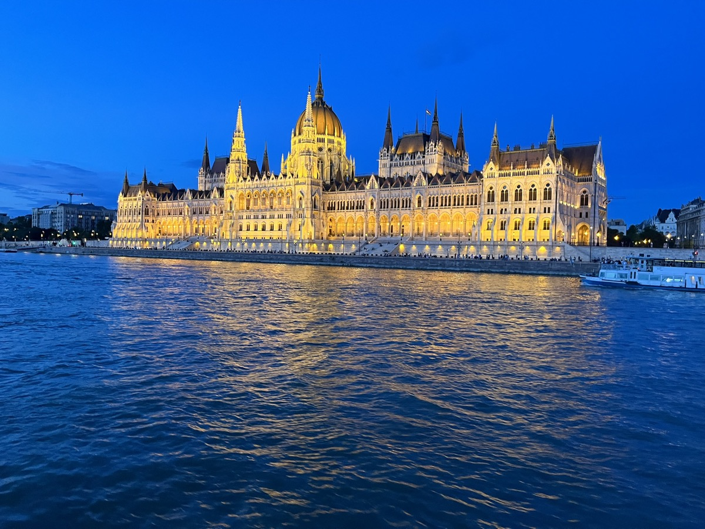
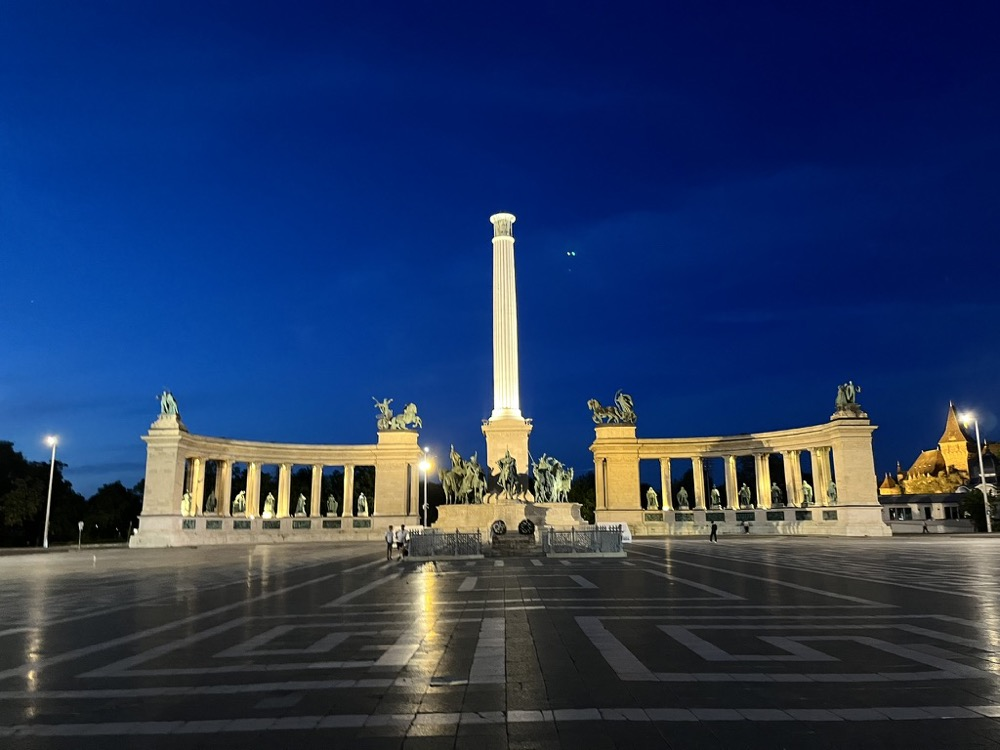
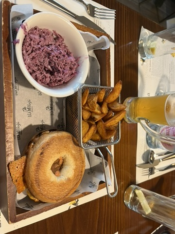

Babičce k 80. narozeninám ❤️
25.–29. září 2026

Čtyři noci v Budapešti. Pomalé tempo, dobré jídlo a místa, na která se nezapomíná.
25.–29. září 2026
čtvrtek příjezd, pondělí odjezd
EC 131 Ostrava ~13:40 → Budapest Nyugati 19:49
EC 130 Budapest Nyugati 8:12 → Ostrava ~14:13
přímý spoj, ~6 hodin
Kiss József utca 8. Byt ve 3. patře bez výtahu — plánujeme vyrazit vždy dopoledne, užít si město, a odpoledne se vrátit na odpočinek.
náš byt 🏠Blaha Lujza tér — tramvaj 4/6 a metro M2 (5 min od bytu). Nám. papeže Jana Pavla II. — metro M4 (automatické!).

📍 Hősök tereTradiční maďarská restaurace s moderním nádechem. Taťka tu měl fajn burger.

📍 VakVarjúVýborná kavárna — skvělá káva, dezerty, klidné posezení. Brunch v pátek, nebo odpolední přestávka.
📍 VAJYolofood.hu — zdravé jídlo, vhodné i pro dietní požadavky (nízkotučné). Kifli.hu — potraviny a hotová jídla s dovozem. Praktické na dny, kdy se nikomu nechce ven.
Klidný podnik na craftové pivo — žádná party, jen dobré pivo a pohoda.
Nejlepší craft beer bar v Budapešti. Dvorní posezení, 20+ píp, klidná atmosféra. Monyó, Fehér Nyúl, Hübris — místní pivovary, které stojí za ochutnání.
📍 ÉlesztőKonec září: 10–22 °C. Vrstvy — ráno a večer chladno, odpoledne může být teplo. Lehká bunda na večerní Dunaj. Deštník pro jistotu.
Tramvaj 4/6 — nízkopodlažní, jezdí často, staví na Blaha Lujza tér. Bus 16 na Budu. Metro M4 je automatické (bez řidiče!) — stojí za to si ho projet. Dostanou neomezenou jízdenku na všechno.
Mezi každou aktivitou plánujeme zastávku na kávu nebo odpočinek. Vyrazíme ráno, vrátíme se odpoledne, ať nemusíme vycházet schody na dvakrát.
Google Translate pomůže.
Kliknutím otevřete v Google Maps:
Budapešť 2026 — rodinný výlet · září 2026